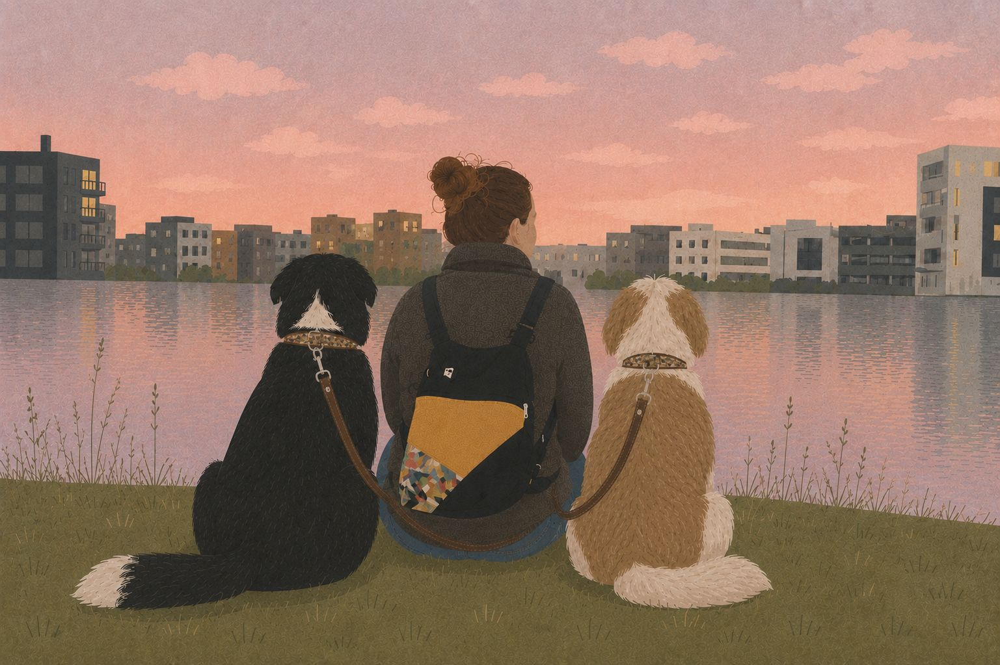

Om mig

Dyr har været en del af mit liv, så længe jeg kan huske. Jeg er vokset op med hunde, og fra jeg var helt lille, har mit liv også været ledsaget af hamstere, skildpadder, fugle og katte. Hver af dem har på sin egen måde vakt min nysgerrighed, kærlighed og dybe respekt for dyr. Men med hunde har der altid været en særlig forbindelse.
I mange år troede jeg, at det at elske en hund betød at passe på den, beskytte den, give den kærlighed og sørge for, at den havde et godt liv. Med tiden opdagede jeg, at der er noget endnu dybere: at elske en hund betyder også at ville forstå den. At forstå, hvordan den kommunikerer. Hvad den føler. Hvorfor den gør, som den gør. Hvad den har brug for fra os. Og frem for alt at lære at se den som det individ, den er.
Denne nysgerrighed og kærlighed til hunde voksede, indtil de blev et reelt behov for at lære. At forstå ikke kun deres adfærd, men alt det, der ligger bag den. Derfor valgte jeg at uddanne mig inden for Professionel Bevidst Hundeuddannelse (ECCP, fra den spanske oversættelse), et etårigt forløb med fokus på hundeuddannelse og adfærdsmodifikation fra et holistisk perspektiv.
Gennem ECCP fordyber jeg mig i områder, som jeg er passioneret omkring, såsom studiet af adfærd og biologi, de neurofysiologiske grundlag for adfærd, læring, ontogeni, genetik og miljøpåvirkning, dyrevelfærd, hundekommunikation og hundes sociale adfærd, blandt mange andre. Jeg lærer også at forstå meget mere komplekse processer relateret til følelser og adfærd: stress, frygt, angst, separationsrelaterede problemer, reaktivitet og andre adfærdsforstyrrelser, samt vigtigheden af at vide, hvornår et tilfælde kræver fælles arbejde eller henvisning til fagfolk inden for andre specialer.
Alt dette ændrer dybt min måde at forstå hunde på. For mig betyder uddannelse ikke længere blot at få en hund til at adlyde eller “opføre sig pænt”. Det betyder at spørge os selv, hvorfor en adfærd opstår, før vi forsøger at ændre den. Det betyder at observere det individ, vi har foran os, med henblik på dets genetik, udvikling, tidligere erfaringer, læring, følelsesmæssige tilstand, miljø, behov og det forhold, det har til de mennesker, det lever sammen med. For en adfærd eksisterer aldrig isoleret.
Jeg tror på uddannelse baseret på respekt, empati, tillid, viden og forståelse, hvor vi kan blive en trygg reference for vores hunde uden at holde op med at lytte til, hvad de har at fortælle os. For hunde taler: de gør det med deres kroppe, med deres bevægelser, med de afstande, de tager og søger, med deres blikke, med deres beslutninger og også gennem dem adfærd, mennesker ofte tolker som “problemer”. At lære at observere dem på en anden måde har ændret min måde at se dem på. Og det har også ændret mig.
En vej, der kun lige er begyndt
Jo mere jeg studerer hundes adfærd, jo flere spørgsmål opstår, og jo mere vil jeg fortsætte med at lære.
Derfor er ECCP for mig ikke slutningen på min uddannelse, men begyndelsen på en professionel vej. Mine næste skridt vil gå i retning af at fordybe mig især i etologi og dyreadfærd, og måske også på et senere tidspunkt i området for terapihunde og hundeassisterede interventioner, hvor jeg vil fortsætte med at udforske det ekstraordinære forhold, der kan opstå mellem dyr og mennesker.
Mit mål er at fortsætte med at uddanne mig og få erfaring for bedre at forstå ikke kun, hvad en hund gør, men hvorfor den gør det, hvad den føler, hvad den har brug for, og hvordan vi kan følge den med respekt for, hvem den er. For jo mere jeg lærer om dem, jo mere bevidst bliver jeg om alt det, jeg stadig har tilbage at opdage.
Først var de barndomsfæller. Derefter blev de en passion. I dag bliver de også min professionelle vej.
En vej, jeg vil gå med viden, følsomhed, ansvar og, frem for alt, den store respekt, jeg føler for dem.
For mig begynder uddannelse med forståelse.
Og forståelse begynder med at lære at lytte.